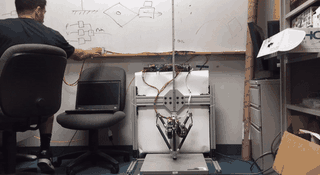
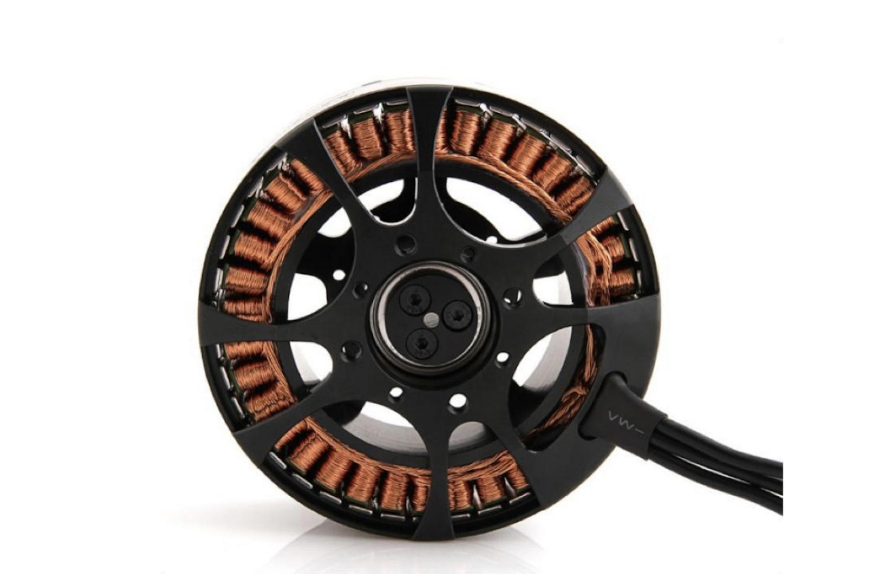
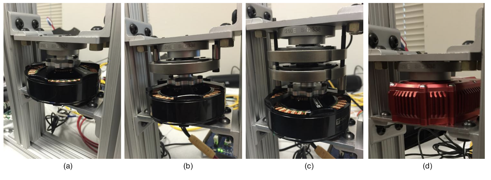
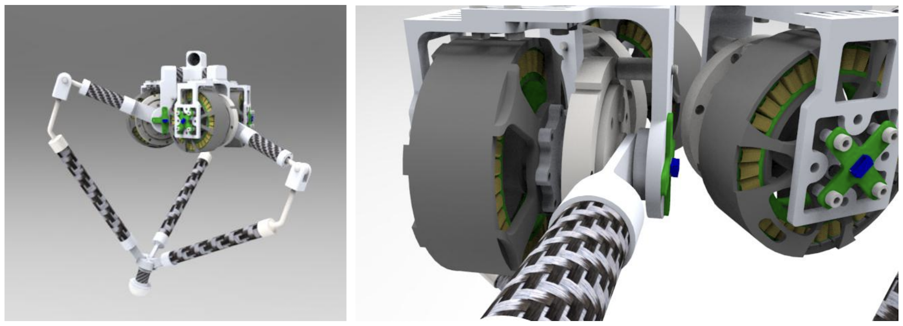
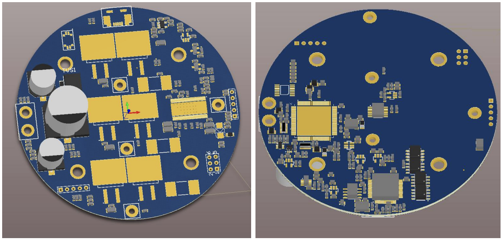
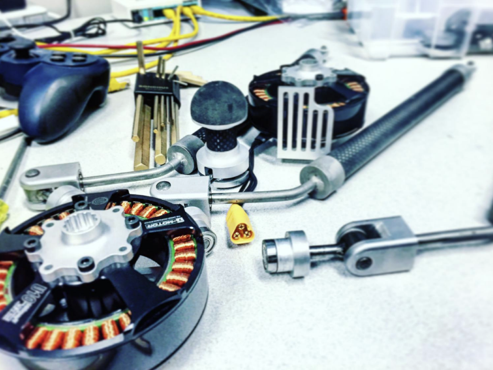

Low-Cost QDD Actuators: A Hardware Prerequisite for Sim-to-Real Locomotion in Humanoid Robots
Commodity drone motors, a low-ratio planetary gearbox, and a custom motor driver produced a backdrivable actuator with sim-friendly dynamics — enabling the sim-to-real RL pipeline that now powers quadruped and humanoid locomotion.

The goal of my Master's Thesis was to invent an actuation paradigm that would enable low-cost legged robots (humanoids, quadrupeds, wheel-leg robots) to perform dynamic and even acrobatic behaviors, with hardware simple enough to model for sim-to-real transfer.
In 2016, there were no available off the shelf actuators that suited these criteria so I developed a new actuator using low-cost drone motors that balanced the high bandwidth proprioceptive force control of direct-drive actuation with the higher torque density of geared actuators and the low-cost quasi-direct-drive (QDD) actuator was born.
Today, many of the major robotics players have adopted the low-cost QDD actuation paradigm from lab robots like the MIT Mini Cheetah (2019) and Berkeley Blue Arm (2019) to the Unitree robots now performing crazy acrobatic manuevers. Even Bezos likes QDD actuators.
Bezos browsing through my thesis is all one can hope for from a masters thesis @JeffBezos pic.twitter.com/2nIE8FelKm
— Simon Kalouche (@simonkalouche) October 24, 2024
The key insight was repurposing mass-produced, low-cost drone motors as high-performing robotic actuators by combining them with off-the-shelf planetary gearboxes and a custom low-cost motor driver — the latter enabled by pairing a diametrically polarized magnet on the rotor with a magnetic field sensing chip for encoding and electronic commutation. The result was a fully proprioceptive QDD actuator at one-tenth the cost of existing robotic actuators at the time.
Beyond cost, the simple, near-linear dynamics of QDD — minimal friction, minimal backlash, and well-characterized motor constants — proved equally important for simplified control and sim-to-real reinforcement learning, where accurate actuator modeling in simulation is a prerequisite for successful policy transfer to hardware. This combination of low cost and sim-friendly dynamics enabled the subsequent mass adoption of QDD actuation for robot learning.
Actuator Requirements
Dynamic legged locomotion requires actuators that simultaneously provide high torque density (2-3x body weight in ground reaction forces), high bandwidth (kHz-scale force control), backdrivability (for impact absorption and proprioceptive sensing), and mechanical robustness to repeated ground impacts. In 2016 no low-cost commercial actuator satisfied all four constraints.
Direct-drive motors provide high force transparency but insufficient torque density for dynamic locomotion. High-ratio geared actuators (50:1+) multiply torque effectively, but reflected inertia scales with the square of the gear ratio (Ireflected = n² · Irotor). A 49:1 gearbox reflects 2,401x the rotor inertia to the output, eliminating backdrivability and degrading current-based torque sensing to 24% error on a 2-stage planetary gearmotor [1]. High-ratio gears also introduce backlash, friction, and compliance that limit impedance rendering accuracy. Series-elastic actuators (SEAs) decouple the gearbox from the load via a compliant element, improving impact tolerance, but bandwidth is limited by spring stiffness — stiffer springs increase bandwidth at the cost of torque resolution and compliance range.
| Property | Direct Drive | Quasi-Direct-Drive | High-Ratio Geared | Series Elastic |
|---|---|---|---|---|
| Gear ratio | 1:1 | <10:1 | >50:1 | >50:1 + spring |
| Torque density | Low | Moderate-High | Very High | Low |
| Backdrivability | Excellent | Good | Poor | Moderate (via spring) |
| Force transparency | Excellent | Good | Poor | Moderate |
| Bandwidth | Very High | High | Low | Limited by spring |
| Impact robustness | Excellent | Good | Poor (gear damage) | Good (spring absorbs) |
| Proprioceptive sensing | Good | Good | Poor (friction/backlash) | Moderate |
Qualitative comparison of actuator architectures for dynamic legged robots.
Motor Torque Density and Gap Radius
In direct-drive and QDD regimes, torque is the binding constraint. Motor torque scales with rotor volume (Tm = 2(B̄Ā)πRgap²L), but mass scales linearly with both Rgap and L, so torque density is proportional to gap radius and independent of axial length. Short, wide motors produce more torque per kilogram than long, narrow ones.
Under sustained operation, continuous torque is thermally limited by winding temperature, which depends on resistive losses (I²R) and the thermal path from copper to ambient. A thermal specific torque density metric Kts = (kt/m) · √(1/(Rth·R)) was used to rank candidate motors, where kt is the torque constant, m is mass, Rth is thermal resistance, and R is winding resistance. The T-Motor U10, a COTS drone outrunner with a 40 mm gap radius, achieved Kts = 0.42 Nm/(kg·°C). MIT's custom Cheetah motors achieved 0.71 Nm/(kg·°C) at Rgap = 49 mm, consistent with the same scaling relationship.

The T-Motor U10: 40 mm gap radius, kt = 0.072 Nm/A, 0.42 Nm/(kg·°C) thermal specific torque. From [1], Fig. 3.16.
Low-Ratio Gear Reduction
The term quasi-direct-drive (QDD) was introduced in [1] to describe actuators that pair a high-torque-density brushless motor with a low-ratio (<10:1) single-stage transmission — preserving the backdrivability and force transparency of direct-drive while multiplying output torque. The U10 was coupled to a Matex 1:7 single-stage planetary gearbox. At n=7, reflected inertia is 49x the rotor inertia (vs. 2,401x at n=49), the actuator remains fully backdrivable, and proprioceptive torque sensing via motor current achieves 5.4% error. The resulting actuator delivered 28 Nm peak torque at 0.665 kg — a torque density of 15.3 Nm/kg, compared to 3.6 Nm/kg for the same motor in direct-drive.
A single-stage planetary was selected over multi-stage reductions. Each additional stage compounds reflected inertia, introduces backlash, and adds friction that degrades force transparency. The single-stage Matex 1:7 kept total actuator mass under 0.7 kg while maintaining 40 Hz torque bandwidth — sufficient for kHz-rate impedance control during dynamic locomotion.

Actuator test rig: (a) direct-drive, (b) QDD with 1-stage planetary, (c) gearmotor with 2-stage planetary, (d) Hebi X-5 SEA. All tested on a single-axis torque load cell at 1 kHz. From [1], Fig. 2.11.
Experimental Comparison
All four actuator types — DD, QDD, gearmotor, SEA — were characterized on the same torque load cell rig under sinusoidal and step torque trajectories from 1–100 Hz at 1 kHz control frequency. Bandwidth was defined as the maximum frequency at which the actuator tracked a commanded sinusoidal torque with adequate accuracy:
| Metric | Direct Drive | QDD (1:7) | Gearmotor (1:49) | SEA |
|---|---|---|---|---|
| Peak torque (Nm) | 6.5 | 28 | 196 | 2.5 |
| Mass (kg) | 0.40 | 0.67 | 0.93 | 0.32 |
| Torque density (Nm/kg) | 3.6 | 15.3 | 76.3 | 4.1 |
| Torque bandwidth (Hz) | 70 | 40 | 20 | 30 |
| Torque sensing error | 12% | 5.4% | 24% | 28% |
| Reflected inertia (kg-m²) | 0.0001 | 0.0049 | 0.2401 | 0.0032 |
| Rise time (ms) | 4.3 | 10.1 | 127 | 11.0 |
Table 2.1 from [1]. All tests used an SRI M2210E torque load cell at 1 kHz control frequency.
QDD provides 4x the torque density of direct-drive with a modest bandwidth reduction (40 Hz vs. 70 Hz), 5.4% torque sensing error (vs. 24% for gearmotors, 28% for SEAs), and 10 ms rise time. The gearmotor's 127 ms rise time — 12x slower — precludes the rapid impedance modulation required during stance-to-flight transitions in dynamic gaits.
System Integration: GOAT
The QDD actuator was validated in the GOAT (Gearless Omnidirectional Acceleration-vectoring Topology), a 3-DoF legged robot using three modular QDD actuators machined and assembled from commodity components.

CAD renderings of the 3-RSR leg and QDD actuator modules. Each actuator pairs a T-Motor U10 with a Matex 1:7 planetary in a compact, sealed housing. From [1], Fig. 3.11.
The motor controller used field-oriented control (FOC) commutation to maximize torque output at every electrical angle, with an RMS current limiter to safely overdrive the motors at 2-3x continuous current for the short duty cycles typical of jumping (~20%). FOC was implemented on a custom driver board using a TI Piccolo TMS320F28069M DSP running current, velocity, and position PID loops at 10 kHz. Off-the-shelf ESCs designed for drone propulsion were inadequate — they use trapezoidal (6-step) commutation optimized for unidirectional high-speed operation, and lack the bidirectional torque control and position feedback required for legged locomotion.
A key cost reduction was the use of a diametrically polarized magnet paired with a magnetic encoder chip mounted directly on the driver board for rotor position sensing and electronic commutation — eliminating the optical encoders and Hall-effect sensor boards that added cost and complexity to conventional servo actuators. This low-cost PCB, combined with a commodity drone outrunner motor and off-the-shelf planetary gearbox, produced a complete QDD actuator at approximately 1/10th the cost of comparable actuators from traditional robotics suppliers.

Custom motor driver: TI Piccolo TMS320F28069M MCU with DRV8301 bridge driver, diametrically polarized magnet + magnetic encoder for rotor position sensing, and 6 N-channel Vishay SUM110N06-05L 60V MOSFETs. From [1], Fig. 3.18.
The GOAT leg delivered 20.1 J of energy per jump, achieving 82 cm vertical jumps (more than 2x body height), omnidirectional running, and high-fidelity virtual compliance via impedance control — all using proprioceptive force sensing through motor current, with no dedicated F/T sensors. The entire actuator was built from commodity components — COTS drone motors, off-the-shelf planetary gears, and custom PCBs fabricated at standard board houses — at roughly 1/10th the cost of comparable actuators from traditional suppliers. Published in [1] and [2].
Sim-to-Real Reinforcement Learning
Beyond hardware performance and cost, QDD dynamics proved critical for the sim-to-real reinforcement learning pipeline that now dominates legged locomotion. RL policies for walking, running, and jumping are trained in physics simulators (MuJoCo, Isaac Gym) and transferred to hardware. The fidelity of this transfer depends on how accurately the simulator models the actuator. High-ratio geared actuators exhibit complex nonlinear phenomena — Coulomb friction, stiction, velocity-dependent viscous losses, backlash, and gear compliance — that are difficult to identify, vary with temperature and wear, and are poorly supported by standard rigid-body simulators. These unmodeled dynamics produce a sim-to-real gap that causes RL policies trained in simulation to fail on hardware.
QDD actuators largely eliminate this problem. With a single-stage low-ratio gear, friction and stiction are minimal, backlash is negligible, and the dominant dynamics reduce to well-characterized motor constants (torque constant, winding resistance, rotor inertia). A QDD joint can be modeled in simulation as a torque source with known reflected inertia and viscous damping — parameters that standard simulators handle accurately. This is why virtually every RL-trained legged robot deployed to date — MIT Mini Cheetah, Unitree Go1/H1/G1, Agility Digit, Tesla Optimus — uses QDD actuation. Low-cost, backdrivable hardware with sim-friendly dynamics was a necessary prerequisite for the sim-to-real pipeline that now powers the humanoid robotics industry.
Subsequent Adoption
Katz and Kim (MIT, 2019) scaled the QDD approach to a full 12-DoF quadruped — the Mini Cheetah — using custom BLDC motors with 6:1 planetary gears (9 kg, backflip-capable). Berkeley Blue (2019) extended QDD to manipulation. Unitree mass-produced QDD quadrupeds (Go1, A1) and subsequently carried the same actuation principle into humanoids (H1, G1). The underlying design rules are scale-invariant: keep the gear ratio low enough to preserve backdrivability, use current sensing for force control, and size the transmission to absorb repeated ground impacts without damage.

References
- [1] S. Kalouche, "Design for 3D Agility and Virtual Compliance Using Proprioceptive Force Control in Dynamic Legged Robots," Master's Thesis, CMU Robotics Institute, August 2016.
- [2] S. Kalouche, "GOAT: A Legged Robot with 3D Agility and Virtual Compliance," IEEE/RSJ IROS, 2017.
- [3] B. Katz, J. Di Carlo, S. Kim, "Mini Cheetah: A Platform for Pushing the Limits of Dynamic Quadruped Control," IEEE ICRA, 2019.
- [4] D. Gealy et al., "Quasi-Direct Drive for Low-Cost Compliant Robotic Manipulation," IEEE ICRA, 2019.